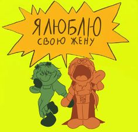
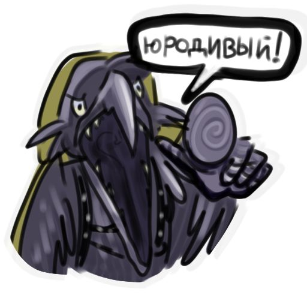

Лололошка — це загадковий мироходець (мандрівник між світами), який володіє особливим органом — «Іскрою», що дозволяє йому переміщатися між вимірами.
Зовнішність: Традиційно носить блакитний шарф у клітинку, сонцезахисні окуляри та білу толстовку.
Особливість: У більшості сезонів він страждає на амнезію, забуваючи про свої минулі пригоди після переходу в новий світ. Він мовчазний герой, проте його дії завжди впливають на долю цілих всесвітів.
Основні сюжетні сезони
| Назва сезону | Короткий опис сюжету |
|---|---|
| Нове Покоління | Початок шляху, де Лололошка потрапляє у світ і стикається з магічними силами. |
| Гра Бога | Протистояння могутньому Джодаху в напівзруйнованому світі. |
| Ідеальний Світ | Світ майбутнього з жорстким контролем та ШІ під назвою Райя-Прайм. |
| Голос Часу | Пригоди в Міжсвітті з часовими аномаліями. |
| 13 Вогнів | Історія в пустельному світі Міср зі священними вогнями. |
| Остання Реальність | Навчання в університеті та цифрові таємниці. |
| Серце Всесвіту | Пошуки легендарного артефакту. |
Ключові персонажі
Джодах Аві — могутній деміург, антагоніст або союзник.
Райя-Прайм — ШІ-помічниця з «Ідеального Світу».
Дилан — студент-програміст, союзник у розкритті таємниць.
Той, що Дивиться — загадкова сутність мультивсесвіту.
JDH (Джон Дейвіс Гаріс) — альтернативна версія Лололошки.